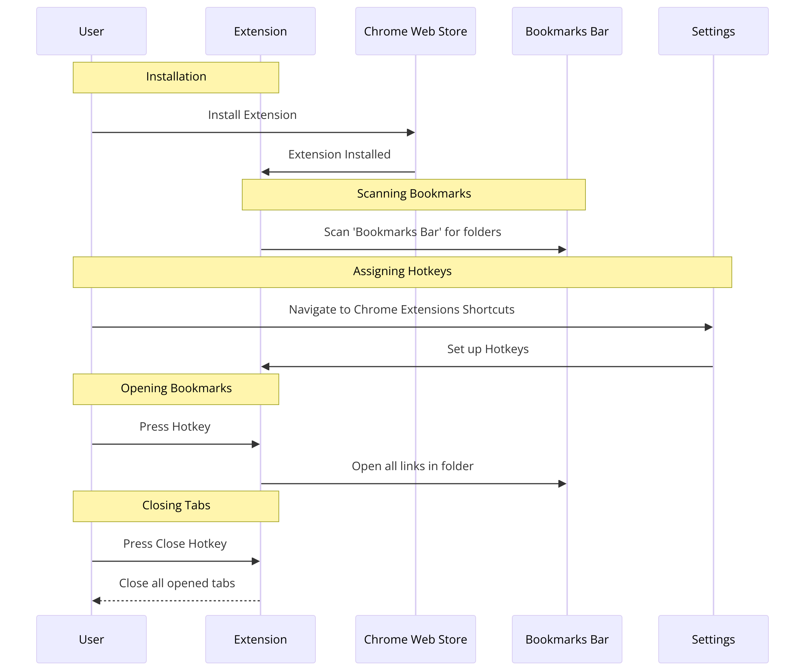

Welcome to Speed Dial Bookmark, the Chrome extension that enhances your browsing experience by allowing you to access and manage your bookmarks with quick and easy keyboard shortcuts. Navigate your bookmarks like never before, all without lifting your fingers off the keyboard.
Features
Quick Access: Open any bookmark folder with just a hotkey.
Efficiency: Navigate through your bookmarks faster than ever.
Bulk Opening: Open all bookmarks in a folder at once.
Smart Close: Close all tabs opened by the extension in a snap.
How It Works
The extension operates in a simple and straightforward manner:
User installs the Chrome extension.
Extension automatically scans 'Bookmarks Bar' for folders.
User assigns hotkeys to the detected folders.
Pressing a hotkey opens all links in the corresponding folder.
An additional hotkey is used to close all tabs opened by the extension.
Setting Up
To begin using Speed Dial Bookmark, follow these setup steps:
Add the extension from the Chrome Web Store.
Click the extension icon to view your bookmark folders.
Go to chrome://extensions/shortcuts to assign hotkeys.
Start using your hotkeys to manage your bookmarks efficiently.
Video Tutorial
Watch the video below for a visual guide on how to use the Speed Dial Bookmark extension:
Visual Guide

This flowchart shows the workflow from installation to daily use.
Troubleshooting
If you encounter issues:
Ensure hotkeys are set correctly in Chrome settings.
Check for conflicts with other extensions or shortcuts.
Update to the latest version of Chrome if needed.
Report an Issue
If you encounter any problems or have suggestions, please let us know. Click the button below to report an issue or suggest an improvement: